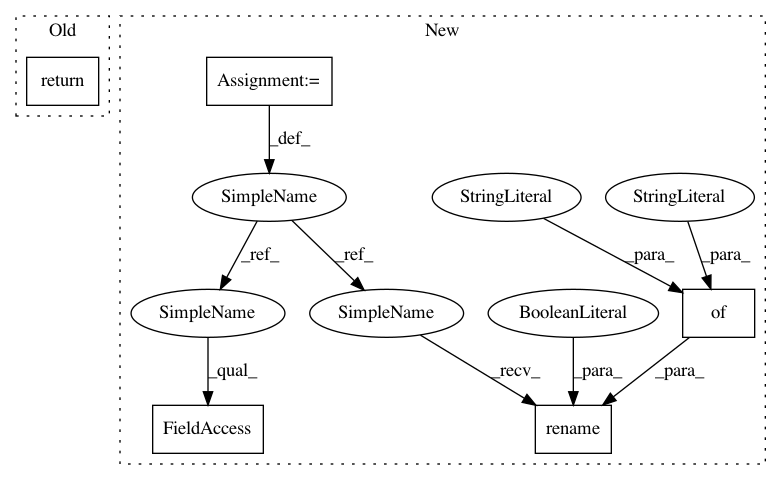

d5d30240fe71a09c45b45a719230b6c6f83c9404,pudl/analysis.py,,simple_select,#Any#Any#,18
Before Change
// Creates a sql Select object
select = sa.sql.select([tbl, ])
// Converts sql object to pandas dataframe
return(pd.read_sql(select, pudl_engine))
def simple_ferc1_plant_ids(pudl_engine):
After Change
if "plant_id" in table.columns:
// Shorthand for readability... pt = PUDL Tables
pt = models.PUDLBase.metadata.tables
// Pull in plants_eia which connects EIA & PUDL plant IDs
plants_eia_tbl = pt["plants_eia"]
plants_eia_select = sa.sql.select([
plants_eia_tbl.c.plant_id,
plants_eia_tbl.c.plant_id_pudl,
])
plants_eia = pd.read_sql(plants_eia_select, pudl_engine)
out_df = pd.merge(table, plants_eia, how="left", on="plant_id")
out_df.rename(columns={"plant_id": "plant_id_eia"}, inplace=True)
out_df.plant_id_pudl = out_df.plant_id_pudl.astype(int)
table = out_df
else:
table = table
In pattern: SUPERPATTERN
Frequency: 3
Non-data size: 5
Instances
Project Name: catalyst-cooperative/pudl
Commit Name: d5d30240fe71a09c45b45a719230b6c6f83c9404
Time: 2017-10-09
Author: alanamwilson@gmail.com
File Name: pudl/analysis.py
Class Name:
Method Name: simple_select
Project Name: kwgoodman/numerox
Commit Name: ff4442058fda05f6e7496d390a714a41ce7c9877
Time: 2017-11-08
Author: kwgoodman@gmail.com
File Name: numerox/prediction.py
Class Name: Prediction
Method Name: to_csv
Project Name: catalyst-cooperative/pudl
Commit Name: d5d30240fe71a09c45b45a719230b6c6f83c9404
Time: 2017-10-09
Author: alanamwilson@gmail.com
File Name: pudl/analysis.py
Class Name:
Method Name: simple_select
Project Name: soft-matter/trackpy
Commit Name: dbeab7509cfec1314b6529d57fbd090ce744695c
Time: 2017-07-27
Author: caspervdw@gmail.com
File Name: trackpy/motion.py
Class Name:
Method Name: compute_drift